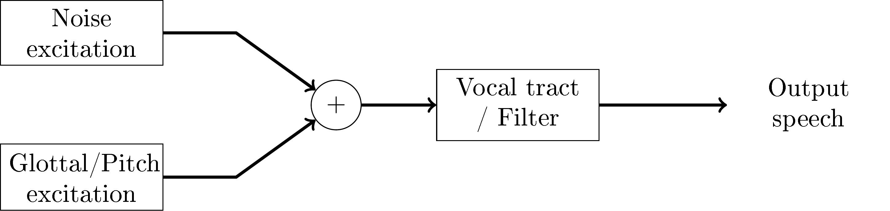

Code-excited linear prediction (CELP)
Contents
10.3. Code-excited linear prediction (CELP)¶
The most famous speech coding paradigm is code-excited linear prediction (CELP). It was first invented in 1985 and is the basis of all main-stream codecs dedicated to speech. Its most prominent variant is the algebraic CELP, which uses an algebraic codebook to encode the noise residual. Codecs such as AMR, EVS, G.718 and Speex (superseded by Opus) are all based on variants of CELP.
As an overview, CELP is based on a source-filter model of speech, where linear prediction is used to model the filtering effect of the vocal tract (and other effects) and this filter is excited by the speech source, viz. the glottal source and turbulent noise. Typically, the pitch or fundamental frequency model is a long-term prediction (LTP) filter, which is just a linear predictor with a long delay. To model noise, CELP codecs usually use a vector codebook. The codebook contribution is often optimized with analysis-by-synthesis, where the output of different quantizations are synthesised and the synthesised outputs are evaluated to choose the best quantization. The evaluation uses perceptual weighting such that the subjective, perceptual quality can be compared.
Since linear prediction and fundamental frequency modelling are described in detail elsewhere, below we will discuss only overall encoder/decoder structure, perceptual evaluation, noise modelling and analysis-by-synthesis.
 The source-filter model of CELP codecs.
10.3.1. Encoder/decoder structure¶
The decoder (see image on the right) very closely implements the idea of the source-filter model (see above). The only refinement are two multiplications with scalar gains, where the noise codebook and pitch contribution are scaled to the desired magnitude. Observe that here we abbreviate linear predictive coding with LPC.
The encoder and decoder typically operate in frames of 20 ms length, which are further subdivided into 5 ms subframes. Operations described above are thus performed on vectors whose length correspond to 5 ms, which at a sampling-rate of 12.8 kHz corresponds to 64 samples.
The encoder (see figure on the right) first estimate the linear predictive (LPC) model, then removes its effect from the input. In other words, since linear prediction is IIR-filtering, we can remove the effect from the speech signal with the corresponding FIR-filter to obtain the LPC-residual. We can then similarly estimate the fundamental frequency (F0) from the residual and again remove its effect to obtain the F0-residual.
The F0-residual closely resembles white noise (following the Laplacian distribution). We can thus quantize it with a noise-quantizer (described below) as well as the pitch and noise gains. To evaluate the output quality of the signal, we then decode the quantized signal and calculate a perceptually weighted error. Since LPC-filtering is autoregressive (IIR), it however has a non-linear effect on the output such that quantization has a non-linear effect on the output. We therefore cannot know which quantization is the best one without trying out all of them. To get best possible performance, in theory, we should try every possible quantization! However, in practice, we choose a group of potentially-good quantization and find the best out of them. This is known as the analysis-by-synthesis method.
Analysis-by-synthesis is a celebrated method because it enables optimization of CELP and achieves relatively high quality. Since CELP is arguably more efficient than competing frequency-domain codecs, and analysis-by-synthesis enables optimization of CELPs, it is important. However, observe that this is a brute-force method, which has an inherent penalty in computational complexity.

CELP decoder structure
 CELP encoder structure
CELP encoder structure
10.3.2. Perceptual quality evaluation¶
Perceptual quality in CELP codecs is evaluated with a weighted norm. Suppose \(W\) is a convolution matrix corresponding to the perceptual weighting filter, then the weighted norm between the true and quantized residual signals \(x\) and \( \hat x \) , respectively, is
Though this is a quadratic form, whose minimization is simple, notice that we consider quantized vectors, such that the minimization is an integer-valued minimization problem, which does not have an analytic solution.
Further, the quantized signal is the sum of noise and pitch contributions, both multiplied with scaling factors
When estimating the F0, we can set the noise contribution to zero, such that we minimize
To compare different pitch contributions, we further need to exclude the gain from the problem, which is achieved by setting the derivative with respect to \( \gamma_{F0} \) to zero (left as an exercises), which gives the optimal gain as
Substituting back to the original problem, after removing constants, yields
Observe that this equation thus evaluates the weighted correlation between the original signal \(x\) and the pitch contribution. In other words, different F0’s can be evaluated with this function and the one with the highest correlation is chosen as the F0.
Once the F0 has been chosen, we calculate the optimal gain and subtract it from the original residual signal, \( x':=x - \gamma_{F0}^* x_{F0}^*. \) This F0-residual is then approximately white noise and can be modelled with the noise codebook. Similarly as above, we assume that the noise-gain is optimal such that the noise codebook can be optimized with
and
We have thus quantized the pitch and noise contributions, but for the two gains we have optimal values, but not optimal quantized values. Again, since quantized values are not continuous, we do not have an analytic solution but must search for the best quantization among all possible values. The optimization problem is
We note that the above equation is a polynomial of the two scalar gains and all vector and matrix terms reduce to constants, such that
In difference to the optimization of the residual vectors, this
optimization is computationally relatively simple such that we can
exhaustively search for the best gains. The gains are usually quantized
with 8 to 10 bits, such that this involves only 256 to 1024 polynomial
evaluations.
The final quantized residual is then
10.3.3. Noise modelling and algebraic coding¶
As mentioned above, the residual after LPC filtering and F0 modelling is approximately stationary white noise, that is, it is constant variance and samples are uncorrelated. We would like to quantize this effectively. White noise signals have however no structure left, except their probability distribution. We can assume that the residual samples \( \xi_k \) follow the Laplacian distribution with zero mean,
The joint log-likelihood is
where \( x_{noise}:= [\xi_1,\dotsc,\,\xi_{K}]. \) and \( \|x\|_1 \) is the 1-norm (absolute sum). In other words, if we model constant-probability vectors \( x_{noise}, \) then that is equivalent with modelling vectors with a constant 1-norm, \( \|x_{noise}\|_1=\text{constant}. \) We can thus build a codebook which has constant 1-norm. For example, if we quantize to integer values, then the absolute sum of the quantized signal is a fixed integer.
In the simplest case, we can quantize \( x_{noise} \) to have one signed pulse at location \(k\), and otherwise all samples are zero. The location of the pulse can be encoded with \( \log_2 K \) bits, and the sign with one bit, such that the overall bit-consumption is \( 1+\log_2 K. \) This encoding strategy can be readily extended by adding more pulses. The bit-consumption of multi-pulse vectors however becomes more complicated. The issue is that if apply a naive encoding where we directly encode the position and sign of each pulse, then we use more bits than necessary for two reasons. Firstly, if two pulses overlap, then they must have the same sign otherwise they would cancel. Secondly, pulses are indistinguishable, such that their ordering does not matter, such that if we encode pulses one by one, changing their order would give different bit-streams but the encoded signal would remain the same. Both imply that we are using too many bits when using such encodings for multiple pulses. Solutions exist for optimal encoding of such multi-pulse vectors, but the algorithm becomes involved.
In any case, the outcome is that it is possible to generate quantizations of residual signals with algorithmic methods. That is, we have an algorithm or algebraic rule which defines all possible quantizations and consequently, such quantization is known as algebraic coding. The encoding can be chosen to have optimal bit-consumption for a given number of pulses and it is thus (with loose assumptions) the best possible quantization for the residual vector when using a fixed bitrate. It is computationally efficient since the residual vectors are mostly zeros, such that evaluation of the optimization function is straightforward to calculate. It also efficient in the sense that codebooks do not have to be stored, but can be generated on the fly by an algorithm.
Algebraic coding is so central to CELP codecs that CELP codecs using algebraic coding are known as algebraic CELP or ACELP. Most main stream codecs, such as AMR, EVS and USAC use ACELP. Some codecs use also other residual codebooks, but even then, algebraic codes are always the first choice.